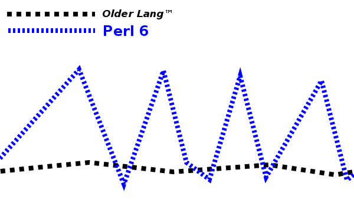
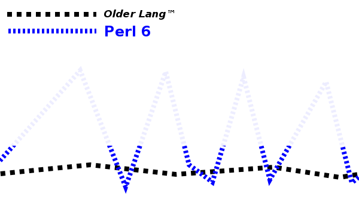

Faster Perl 6 Programs
by
Zoffix Znet
Perl 6 Core Dev
 @zoffix
@zoffix
Use left/right arrows on keyboard (or tap and slide) to navigate the slides.
Perl 6 Is New
- First stable language release: December 25, 2015
- Lots of optimizations are yet to be done
- Largely a volunteer-driven project
Performance Landscape
More uneven in Perl 6 than in older languages.
Some things are a lot slower,
while others are
slightly faster.
Solution
Wait for core devs to make things better?
for ^10_000_000 {
my $set := set 1, 2, 3, 4
}
# 2018.06: 81 seconds
# 2018.07: .5 seconds
Solution
Avoid the peaks.
A Few Rules of Thumb
- Keep it simple
- Pay attention to numeric types
- Regexes aren't fast (yet)
- Use native types
- Use the built-in profiler
Also, bug-report really slow stuff.
Keep it simple
- Use just enough features to get the job done
- Obscure, "clever" feature combinations are more likely to be unoptimized than the more common stuff
Keep it simple
Do you really need all those type checks?
sub rev-cos (
*@stuff where .all ~~ Num|Int|Rat --> Array[Num]
) {
Array[Num].new: @stuff.map: *.flip.cos
}
rev-cos ^100_000; # 3.86 seconds
Keep it simple
The dynamic optimizer will cheapen or even remove some of the
type checks, but things like where refinements and
conversion of Seq type (returned from .map) to an Array have cost
… *@stuff where .all ~~ Num|Int|Rat …
Array[Num].new: …
Keep it simple
Almost the same functionality, but the code is now shorter and 2.7x as fast:
sub rev-cos (*@stuff) { @stuff.map: *.flip.cos }
rev-cos ^100_000; # 1.43 seconds
Keep it simple
In Perl 6, you can specify alternatives in regex by using a list:
my @alts := <foo bar ber>;
say "myfoo and mybar".match: :g, /my @alts/
# OUTPUT: «(｢myfoo｣ ｢mybar｣)»
Keep it simple
You can also execute arbitrary code in code blocks and get the result treated as a regex:
say "480 481 482" ~~ /4 <{'\d' ~ ^3 .pick}>/
# OUTPUT: ｢481｣
Keep it simple
Here's an idea: match an IPv4 address by making a list of
valid values for each octet with a Range operator (..) inside a code block ({ }) inside our regex:
say "127.0.0.1" ~~ /^ <{ 0 .. 255 }>**4 % \. $/
Very simple, if you know Perl 6 regex syntax,
but it's
slow: 8.2 seconds (there's even a
filed
ticket for it).
Keep it simple
say "127.0.0.1" ~~ /^ <{ 0 .. 255 }>**4 % \. $/
- We use a code block (
{ }); can't cache its evaluation - It's called four times for each octet
- Each time we create a regex from that list
- Each has 256 alternatives, which is 1,024 alternatives in total
- (probably some other cause as well; that's why there's ticket)
Keep it simple
- Move alternatives out
- No more code blocks run for each octet
- Now only 256 alternatives, repeated 4 times
my @alts = ^256;
say "127.0.0.1" ~~ /^ @alts**4 % \. $/
New time? 0.05s, which is 163x faster.
Pay attention to numeric types
sub calc (\n) { (1 + .123/n) ** n }
say calc 50_000;
# A SINGLE calculation: 19.73 seconds… huh?
Pay attention to numeric types
Change .123 to .123e0, to
use Num (floating point type) type
for calculation
instead of Rat (rational type)
sub calc (\n) { (1 + .123e0/n) ** n }
calc 50_000 for ^1000_000;
# A MILLION calculations: 0.93 seconds
Pay attention to numeric types
Mark the routine with is pure trait,
so it gets constant-folded at compile time:
sub calc (\n) is pure { (1 + .123e0/n) ** n }
calc 50_000 for ^1000_000;
# Run time: 0.32 seconds
Regexes Aren't Fast (Yet)
- Few optimizations have been done to them
- Richer data structures than in other languages like Perl 5: produce a tree of
Matchobjects; not plain text
Regexes Aren't Fast (Yet)
Does it start with a particular string?
my $x = "foo bar ber";
$x ~~ /^foo/ for ^1000_000;
# 9.2 seconds
Regexes Aren't Fast (Yet)
Use more appropriate string routines, where available:
my $x = "foo bar ber";
$x.starts-with: 'foo' for ^1000_000;
# 0.12 seconds
.starts-with, .ends-with,
.contains, .trim, .subst, .comb
Use Native Types
Let's measure Perl 6 against another language:
# using Perl 5.28.0
use strict;
use warnings;
my @array;
my $i = 0;
push @array, ++$i while $i < 5_000_000;
# 0.4 seconds in Perl 5
Use Native Types
Let's measure Perl 6 against another language:
# using Rakudo Perl 6 2018.06-233-gbf514c150
my @array;
my $i = 0;
@array.push: ++$i while $i < 5_000_000;
# 6.2 seconds in Perl 6
Use Native Types
We can use native types here!
my int @array;
my int $i;
@array.push: ++$i while $i < 5_000_000;
# 0.14 seconds (0.27 seconds if you include startup time)
Native types are written in lowercase (int,
int32, num, etc.). They use the
representation provided by the virtual machine, operating system,
and hardware.
Use Native Types
Native types made our program 43x faster.
It's now 50% faster than Perl 5.
Use Native Types
Keep in mind native types are unboxed and don't have any methods! Method calls cause autoboxing (convertion to non-native version) to occur and can cause a performance penalty:
my $x = -42; $x.abs for ^1000_000; # 0.29 seconds
my int $x = -42; $x.abs for ^1000_000; # 0.48 seconds
Use Native Types
Use subroutine forms of various routines, if available:
my $x = -42; $x.abs for ^1000_000; # 0.29 seconds
my int $x = -42; abs $x for ^1000_000; # 0.08 seconds
2-second Intro to Multi-Dispatch
More than one routine with the same name. Which one is called ("dispatched to") is based on taken arguments:
multi what's(Int) { say "An integer" }
multi what's(Numeric) { say "Some sort of a numeric type" }
what's 42; # OUTPUT: «An integer»
what's 42e0; # OUTPUT: «Some sort of a numeric type»
10-second Intro to Slurpies
It's parameters in signatures that "slurp" up all the remaining arguments:
sub stuff (*@stuff) { say @stuff }
stuff 42; # OUTPUT: «[42]»
stuff 1, 2, 3; # OUTPUT: «[1 2 3]»
sub stuff2 (|capture) { say capture }
stuff2 42, :named-arg; # OUTPUT: «\(42, :named-arg)»
stuff2 1, 2, 3; # OUTPUT: «\(1, 2, 3)»
Be more specific
A bunch of candidates. We call the last one and it has a slurpy:
multi what's(Int $ where .is-prime) {
"Prime integer"
}
multi what's(Int) { "Some integer" }
what's 42 for ^1000_000; # 15 seconds
Be more specific
Removing the slurpy lets the dispatch be cached, making code 5x faster:
multi foo(Int) {}
multi foo(Num) {}
multi foo(Rat) {}
multi foo(Any) {}
foo Any for ^10_000_000; # takes 0.65 seconds
10-second Intro to where clauses
It's just a way to refine a type by specifying additional constraints:
subset Pallindrome of Str where .flip;
say ｢\o/ /o\｣ ~~ Pallindrome; # OUTPUT: «True»
say "testing" ~~ Pallindrome; # OUTPUT: «False»
sub prime-only ($ where .is-prime) { … }
perl6.org
Thank you!